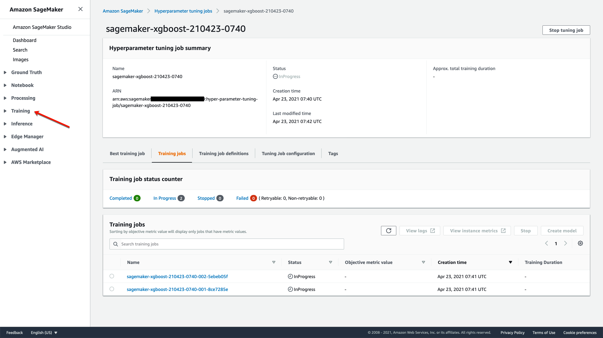

Start this section in a new Jupyter notebook with the Data Science kernel
In this section we’ll train a second model fix the gender imbalance in the dataset using SMOTE and train the model using XGBoost with hyperparameter tuning and Debugger. We will also save this modelto our registry and eventually approved for deployment.
!pip install imbalanced-learn==0.7.0 -qimport json
import boto3
import numpy as np
import pandas as pd
import matplotlib.pyplot as plt
from imblearn.over_sampling import SMOTE
from IPython.display import FileLink, FileLinks
from sklearn.model_selection import train_test_split
import sagemaker
from sagemaker import clarify
from sagemaker.inputs import TrainingInput
from sagemaker.xgboost.estimator import XGBoost
from sagemaker.debugger import Rule, rule_configs
from sagemaker.tuner import IntegerParameter, ContinuousParameter, HyperparameterTuner# Set region, boto3 and SageMaker SDK variables¶
#You can change this to a region of your choice
region = sagemaker.Session().boto_region_name
print("Using AWS Region: {}".format(region))
boto3.setup_default_session(region_name=region)
boto_session = boto3.Session(region_name=region)
s3_client = boto3.client('s3', region_name=region)
sagemaker_boto_client = boto_session.client('sagemaker')
sagemaker_session = sagemaker.session.Session(
boto_session=boto_session,
sagemaker_client=sagemaker_boto_client)
sagemaker_role = sagemaker.get_execution_role()
account_id = boto3.client('sts').get_caller_identity()["Account"]
random_state = 42# load stored variables
%store -r
%storedf = pd.read_csv(local_processed_path)
df.head()One approach to addressing imbalanced datasets is to oversample the minority class. New examples can be synthesized from the existing examples. This is a type of data augmentation for the minority class and is referred to as the Synthetic Minority Oversampling Technique, or SMOTE for short.
sm = SMOTE(random_state=random_state)
df_resampled, _ = sm.fit_resample(df, df['SEX'])# Check the gender balance
df_resampled['SEX'].value_counts()X_train, X_test = train_test_split(df_resampled, test_size=0.2, random_state=random_state)
X_train, X_val = train_test_split(df_resampled, test_size=0.2, random_state=random_state)X_train.to_csv(f'{local_data_dir}/train_res.csv', header=False, index=False)
response = sagemaker_session.upload_data(f'{local_data_dir}/train_res.csv',
bucket=default_bucket,
key_prefix=data_prefix)
train_res_data_uri = response
%store train_res_data_uri# training data with header - needed for model monitor baseline job
X_train.to_csv(f'{local_data_dir}/train_res_header.csv', header=True, index=False)
response = sagemaker_session.upload_data(f'{local_data_dir}/train_res_header.csv',
bucket=default_bucket,
key_prefix=data_prefix)
train_res_data_header_uri = response
%store train_res_data_header_uriX_val.to_csv(f'{local_data_dir}/validation_res.csv', header=False, index=False)
response = sagemaker_session.upload_data(f'{local_data_dir}/validation_res.csv',
bucket=default_bucket,
key_prefix=data_prefix)
validation_res_data_uri = response
%store validation_res_data_uriX_test.to_csv(f'{local_data_dir}/test_res.csv', header=False, index=False)
response = sagemaker_session.upload_data(f'{local_data_dir}/test_res.csv',
bucket=default_bucket,
key_prefix=data_prefix)
test_res_data_uri = response
%store test_res_data_uriFor SageMaker XGBoost training jobs, use the Debugger CreateXgboostReport rule to receive a comprehensive training report of the training progress and results. Following this guide, specify the CreateXgboostReport rule while constructing an XGBoost estimator. The CreateXgboostReport rule collects the following output tensors from your training job:
labels – Saves every 5 steps.
train_instance_count = 1
train_instance_type = "ml.m4.xlarge"
content_type = "text/csv"
estimator_output_path = f's3://{default_bucket}/{prefix}/training_jobs'
# this line automatically looks for the XGBoost image URI and builds an XGBoost container.
# specify the repo_version depending on your preference.
xgboost_container = sagemaker.image_uris.retrieve("xgboost", region, "1.2-1")
# construct a SageMaker estimator that calls the xgboost-container
xgb_estimator = sagemaker.estimator.Estimator(image_uri=xgboost_container,
hyperparameters=hyperparameters,
role=sagemaker.get_execution_role(),
instance_count=train_instance_count,
instance_type=train_instance_type,
volume_size=5, # 5 GB
output_path=estimator_output_path,
)We will tune four hyperparameters in this examples:
max_depth: Maximum depth of a tree. Increasing this value makes the model more complex and likely to be overfitted.
hyperparameter_ranges = {'max_depth': IntegerParameter(1, 10),
'eta': ContinuousParameter(0, 1),
'gamma': ContinuousParameter(0, 5),
'alpha': ContinuousParameter(0, 2)
}Next we’ll specify the objective metric that we’d like to tune and its definition, which includes the regular expression (Regex) needed to extract that metric from the CloudWatch logs of the training job. Since we are using built-in XGBoost algorithm here, it emits two predefined metrics: validation:auc and train:auc, and we elected to monitor validation:auc as you can see below. In this case, we only need to specify the metric name and do not need to provide regex. If you bring your own algorithm, your algorithm emits metrics by itself. In that case, you’ll need to add a MetricDefinition object here to define the format of those metrics through regex, so that SageMaker knows how to extract those metrics from your CloudWatch logs.
objective_metric_name = 'validation:f1'Now, we’ll create a HyperparameterTuner object, to which we pass:
Tuning resource configurations such as Number of training jobs to run in total and how many training jobs can be run in parallel.
tuner = HyperparameterTuner(xgb_estimator,
objective_metric_name,
hyperparameter_ranges,
max_jobs=4,
max_parallel_jobs=2)
# You can increase the number of jobs, etc. I set them to 10, 4 for the demo purposeNow we can launch a hyperparameter tuning job by calling fit() function. After the hyperparameter tuning job is created, we can go to SageMaker console to track the progress of the hyperparameter tuning job until it is completed.
# define the data type and paths to the training and validation datasets
train_input = TrainingInput(train_data_uri, content_type="text/csv")
validation_input = TrainingInput(validation_data_uri, content_type="text/csv")
# execute the XGBoost training job
tuner.fit({'train': train_input,
'validation': validation_input
}
)You can also monitor training jobs and hyperparameter tuning job status on the AWS console.
Navigate to the AWS Console > Amazon SageMaker > Training > Hyperparameter Tuning

After training is done, save the name of the training job with the hyperparamets that yielded the best results.
training_smote_job_name = tuner.best_training_job()
%store training_smote_job_nametraining_job_info = sagemaker_boto_client.describe_training_job(TrainingJobName=training_smote_job_name)# store hyperparameters for best training job
best_job_hp = training_job_info['HyperParameters']
%store best_job_hpmodel_2_name = f'{prefix}-xgboost-smote'
model_matches = sagemaker_boto_client.list_models(NameContains=model_2_name)['Models']
if not model_matches:
model_2 = sagemaker_session.create_model_from_job(
name=model_2_name,
training_job_name=training_job_info['TrainingJobName'],
role=sagemaker_role,
image_uri=training_job_info['AlgorithmSpecification']['TrainingImage'])
%store model_2_name
else:
print(f"Model {model_2_name} already exists.")%store model_2_nametraining_data_s3_uri = training_job_info['InputDataConfig'][0]['DataSource']['S3DataSource']['S3Uri']
matching_artifacts = list(sagemaker.lineage.artifact.Artifact.list(
source_uri=training_data_s3_uri,
sagemaker_session=sagemaker_session))
if matching_artifacts:
training_data_artifact = matching_artifacts[0]
print(f'Using existing artifact: {training_data_artifact.artifact_arn}')
else:
training_data_artifact = sagemaker.lineage.artifact.Artifact.create(
artifact_name='TrainingData',
source_uri=training_data_s3_uri,
artifact_type='Dataset',
sagemaker_session=sagemaker_session)
print(f'Create artifact {training_data_artifact.artifact_arn}: SUCCESSFUL')trained_model_s3_uri = training_job_info['ModelArtifacts']['S3ModelArtifacts']
matching_artifacts = list(sagemaker.lineage.artifact.Artifact.list(
source_uri=trained_model_s3_uri,
sagemaker_session=sagemaker_session))
if matching_artifacts:
model_artifact = matching_artifacts[0]
print(f'Using existing artifact: {model_artifact.artifact_arn}')
else:
model_artifact = sagemaker.lineage.artifact.Artifact.create(
artifact_name='TrainedModel',
source_uri=trained_model_s3_uri,
artifact_type='Model',
sagemaker_session=sagemaker_session)
print(f'Create artifact {model_artifact.artifact_arn}: SUCCESSFUL')trial_component = sagemaker_boto_client.describe_trial_component(TrialComponentName=tuner.best_training_job()+'-aws-training-job')
trial_component_arn = trial_component['TrialComponentArn']# Input artifacts
input_artifacts = [training_data_artifact]
for a in input_artifacts:
try:
sagemaker.lineage.association.Association.create(
source_arn=a.artifact_arn,
destination_arn=trial_component_arn,
association_type='ContributedTo',
sagemaker_session=sagemaker_session)
print(f"Associate {trial_component_arn} and {a.artifact_arn}: SUCCEESFUL\n")
except:
print(f"Association already exists between {trial_component_arn} and {a.artifact_arn}.\n")# Output artifacts
output_artifacts = [model_artifact]
for artifact_arn in output_artifacts:
try:
sagemaker.lineage.association.Association.create(
source_arn=a.artifact_arn,
destination_arn=trial_component_arn,
association_type='Produced',
sagemaker_session=sagemaker_session)
print(f"Associate {trial_component_arn} and {a.artifact_arn}: SUCCEESFUL\n")
except:
print(f"Association already exists between {trial_component_arn} and {a.artifact_arn}.\n")model_metrics_report = {'classification_metrics': {}}
for metric in training_job_info['FinalMetricDataList']:
stat = {metric['MetricName']: {'value': metric['Value']}}
model_metrics_report['classification_metrics'].update(stat)
with open('training_metrics.json', 'w') as f:
json.dump(model_metrics_report, f)
metrics_s3_key = f"{prefix}/training_jobs/{training_job_info['TrainingJobName']}/training_metrics.json"
s3_client.upload_file(Filename='training_metrics.json', Bucket=default_bucket, Key=metrics_s3_key)model_metrics = {
'ModelQuality': {
'Statistics': {
'ContentType': 'application/json',
'S3Uri': f's3://{default_bucket}/{prefix}/{metrics_s3_key}'
}
}
}inference_spec ={
"InferenceSpecification": {
"Containers" : [{
"Image": training_job_info['AlgorithmSpecification']['TrainingImage'],
"ModelDataUrl": training_job_info['ModelArtifacts']['S3ModelArtifacts']
}],
"SupportedTransformInstanceTypes": ["ml.m4.xlarge"],
"SupportedRealtimeInferenceInstanceTypes": ["ml.m4.xlarge"],
"SupportedContentTypes": ['text/csv'],
"SupportedResponseMIMETypes": ['text/csv']
}
}
# {'ModelDataUrl': }mp_input_dict = {
'ModelPackageGroupName': mpg_name,
'ModelPackageDescription': 'XGBoost classifier with SMOTE',
'ModelApprovalStatus': 'PendingManualApproval',
'ModelMetrics': model_metrics
}
mp_input_dict.update(inference_spec)
mp2_response = sagemaker_boto_client.create_model_package(**mp_input_dict)
mp2_arn = mp2_response['ModelPackageArn']
%store mp2_arn# Check status of model package creation¶
mp_info = sagemaker_boto_client.describe_model_package(ModelPackageName=mp2_response['ModelPackageArn'])
mp_status = mp_info['ModelPackageStatus']
while mp_status not in ['Completed', 'Failed']:
time.sleep(5)
mp_info = sagemaker_boto_client.describe_model_package(ModelPackageName=mp2_response['ModelPackageArn'])
mp_status = mp_info['ModelPackageStatus']
print(f'model package status: {mp_status}')
print(f'model package status: {mp_status}')sagemaker_boto_client.list_model_packages(ModelPackageGroupName=mpg_name)['ModelPackageSummaryList']clarify_processor = clarify.SageMakerClarifyProcessor(role=sagemaker_role,
instance_count=1,
instance_type='ml.m5.xlarge',
sagemaker_session=sagemaker_session)
bias_report_output_path = f's3://{default_bucket}/{prefix}/clarify-output/bias_2'
bias_data_config = clarify.DataConfig(s3_data_input_path=train_data_uri,
s3_output_path=bias_report_output_path,
label='LABEL',
headers=header,
dataset_type='text/csv')
model_config = clarify.ModelConfig(model_name=model_2_name,
instance_type='ml.m5.xlarge',
instance_count=1,
accept_type='text/csv',
content_type='text/csv')
predictions_config = clarify.ModelPredictedLabelConfig(probability_threshold=0.5)
bias_config = clarify.BiasConfig(label_values_or_threshold=[0],
facet_name='SEX',
facet_values_or_threshold=[1],
group_name='AGE'
)
clarify_processor.run_bias(data_config=bias_data_config,
bias_config=bias_config,
model_config=model_config,
model_predicted_label_config=predictions_config,
pre_training_methods='all',
post_training_methods='all')
clarify_bias_job_2_name = clarify_processor.latest_job.name
# clarify_bais_job_2_name = 'Clarify-Bias-2021-04-19-18-43-09-582'
%store clarify_bias_job_2_names3_client.download_file(Bucket=default_bucket,
Key=f'{prefix}/clarify-output/bias_2/report.pdf',
Filename='../outputs/clarify_output/bias_2_report.pdf')
print(f'Downloaded clarify report from previous Clarify job: {clarify_bias_job_2_name}')
display("Click link below to view the Clarify repot.", FileLink("../outputs/clarify_output/bias_2_report.pdf"))shap_config = sagemaker.clarify.SHAPConfig(
baseline=[X_train.median().values[1:].tolist()],
num_samples=100,
agg_method='mean_abs')
explainability_output_path = f's3://{default_bucket}/{prefix}/clarify-output/explainability'
explainability_data_config = sagemaker.clarify.DataConfig(
s3_data_input_path=train_res_data_uri,
s3_output_path=explainability_output_path,
label='LABEL',
headers=header,
dataset_type='text/csv')
# # un-comment the code below to run the whole job
# clarify_processor.run_explainability(
# data_config=explainability_data_config,
# model_config=model_config,
# explainability_config=shap_config)
# clarify_expl_job_name = clarify_processor.latest_job.name
# %store clarify_expl_job_name
# print(f'Clarify job {clarify_expl_job_name} ran successfully.')s3://{default_bucket}/{prefix}/clarify-output/explainabilityif 'clarify_expl_job_name' in locals():
s3_client.download_file(
Bucket = default_bucket,
Key = f'{prefix}/clarify-output/explainability/analysis.json',
Filename = '../outputs/clarify_output/explainability_analysis.json'
)
print(f'Downloaded analysis from previous Clarify job: {clarify_expl_job_name}\n')
else:
print(f'Loading pre-generated analysis file...\n')
with open('../outputs/clarify_output/explainability_analysis.json', 'r') as f:
analysis_result = json.load(f)
shap_values = pd.DataFrame(analysis_result['explanations']['kernel_shap']["label0"])
importances = shap_values['global_shap_values'].sort_values(ascending=False)
fig, ax = plt.subplots()
n = 10
y_pos = np.arange(n)
importance_scores = importances.values[:n]
y_label = importances.index[:n]
ax.barh(y_pos, importance_scores, align='center')
ax.set_yticks(y_pos)
ax.set_yticklabels(y_label)
ax.invert_yaxis()
ax.set_xlabel('SHAP Value (impact on model output)');